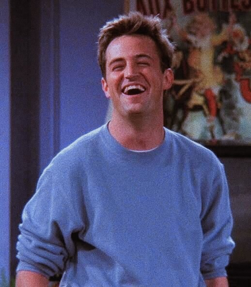

Чендлер Мюріел Бінг (Меттью Перрі) - народився в родині письменниці еротичних романів Нори Тайлер Бінг та гомосексуала-трансвестита, зірки Лас-Вегаса Чарльза Бінга, який переодягався в жінку. Коли Чендлеру було дев'ять років, батьки сказали йому, що вони вирішили розійтись. Оскільки це сталося на День подяки, це свято для Чендлера стало малоприємним. У коледжі Чендлер мешкав в одній кімнаті з Росом Геллером, який став його найліпшим другом. Тоді ж Чендлер познайомився із сестрою Роса, Монікою, та її подругою, Рейчел. Після закінчення коледжу він та Моніка (зі своєю подругою Фібі) зняли квартири в одному будинку навпроти один одного. Трохи пізніше сусідом Чендлера по квартирі став Джої Трібіані, довершивши, таким чином, шістку нерозлучних друзів.